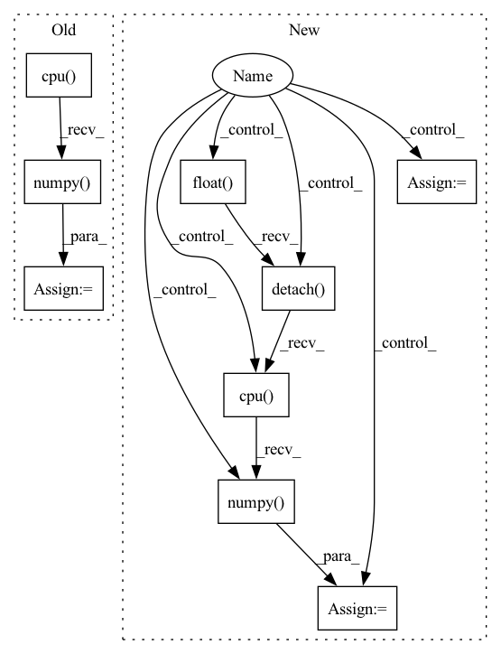

Pattern ID :16164

Before Change
batch, targets, lengths
) //// sorts the batch wrt the length of sequences
pred = model(
torch.autograd.Variable(batch).to(device), lengths.cpu().numpy()
) //// perform forward pass
pred = torch.squeeze(pred)
loss = criterion(
pred.to(device), torch.autograd.Variable(targets.float()).to(device)
After Change
sents2_len,
targets,
_,
_,
) in data_loader["val_loader"]:
//// perform forward pass
pred = model(
sent1.to(device),
sent2.to(device),
sents1_len.to(device),
sents2_len.to(device),
)
//// compute loss
loss = criterion(
pred.to(device), torch.autograd.Variable(targets.float()).to(device)
)
y_true += list(targets.float())
y_pred += list(pred.data.float().detach().cpu().numpy())
total_loss += loss
//// computing accuracy using sklearn"s function
acc = r2_score(y_true, y_pred)
In pattern: SUPERPATTERN
Frequency: 3
Non-data size: 9
Instances
Fragment ID: 54071001
Project Name: shahrukhx01/siamese-nn-semantic-text-similarity
Commit Name: f3d054dd14ef532c408b1306c3341115777ac22f
Time: 2021-12-30
Author: sk28671@gmail.com
File Name: siamese_sts/trainer/train.py
M Class Name: AnonimousClass
N Class Name: AnonimousClass
M Method Name: evaluate_dev_set(5)
N Method Name: evaluate_dev_set(5)
M Parent Class:
N Parent Class:
M File Name: siamese_sts/trainer/train.py
N File Name: siamese_sts/trainer/train.py
M Start Line: 78
M End Line: 95
N Start Line: 91
N End Line: 116
'>
Before Change
(def_seg, _, _, _) = lddmm.applyThisTransform(x_seg, interpmode="nearest")
flow = lddmm.computeThisDisplacement()
flow = np.stack(flow, axis=0)
def_seg = def_seg[-1].cpu().numpy()
def_seg = torch.from_numpy(def_seg[None, None, ...])
tar_seg = torch.from_numpy(y_seg[None, None, ...])
dsc_trans = utils.dice_val(def_seg.long(), tar_seg.long(), 46)
eval_dsc_def.update(dsc_trans.item(), 1)
After Change
eval_dsc_def = AverageMeter()
eval_det = AverageMeter()
with torch.no_grad():
for data in test_loader:
x_seg_oh = nn.functional.one_hot(data[2].long(), num_classes=46)
x_seg_oh = torch.squeeze(x_seg_oh, 1)
x_seg_oh = x_seg_oh.permute(0, 4, 1, 2, 3).contiguous().float().detach().cpu().numpy()
x = data[0].squeeze(0).squeeze(0).detach().cpu().numpy()
y = data[1].squeeze(0).squeeze(0).detach().cpu().numpy()
x_seg = data[2].squeeze(0).squeeze(0).detach().cpu().numpy()
y_seg = data[3].squeeze(0).squeeze(0).detach().cpu().numpy()
dx = [1, 1, 1]
lddmm = torch_lddmm.LDDMM(template=x * 255., target=y * 255., outdir="./", do_affine=0, do_lddmm=1, a=5.,
p=2,
niter=500, epsilon=2, sigma=4., sigmaR=3.2, optimizer="sgd", dx=dx, nt=7,
gpu_number=0,
minbeta=1e-10)
lddmm.run()
x_segs = []
for i in range(46):
(def_seg, _, _, _) = lddmm.applyThisTransform(x_seg_oh[0, i, ...], interpmode="bilinear")
x_segs.append(def_seg[-1][None, None, ...])
x_segs = torch.cat(x_segs, dim=1)
def_seg = torch.argmax(x_segs, dim=1, keepdim=True)
flow = lddmm.computeThisDisplacement()
flow = np.stack(flow, axis=0)
'>
Fragment ID: 54070968
Project Name: junyuchen245/transmorph_transformer_for_medical_image_registration
Commit Name: ec64eeca27e8c76ff542d65f42b73a4ec8c82640
Time: 2022-09-07
Author: jchen245@jhmi.edu
File Name: IXI/Baseline_traditional_methods/LDDMM/infer_IXI.py
M Class Name: AnonimousClass
N Class Name: AnonimousClass
M Method Name: main(0)
N Method Name: main(0)
M Parent Class:
N Parent Class:
M File Name: IXI/Baseline_traditional_methods/LDDMM/infer_IXI.py
N File Name: IXI/Baseline_traditional_methods/LDDMM/infer_IXI.py
M Start Line: 62
M End Line: 83
N Start Line: 59
N End Line: 92
'>
Before Change
model.zero_grad()
pred = model(
torch.autograd.Variable(batch).to(device), lengths.cpu().numpy()
) //// perform forward pass
pred = torch.squeeze(pred)
loss = criterion(
pred.to(device), torch.autograd.Variable(targets.float()).to(device)
) //// compute loss
loss.backward() //// perform backward pass
optimizer.step() //// update weights
pred_val = pred >= 0.5 //// get predictions
y_true += list(targets.int().numpy()) //// accumulate targets from batch
y_pred += list(
pred_val.data.int().detach().cpu().numpy()
) //// accumulate preds from batch
total_loss += loss //// accumulate train loss
acc = accuracy_score(
After Change
sents2_len,
targets,
_,
_,
) in dataloader["train_loader"]:
model.zero_grad()
//// perform forward pass
pred = model(
sent1.to(device),
sent2.to(device),
sents1_len.to(device),
sents2_len.to(device),
)
//// compute loss
loss = criterion(
pred.to(device), torch.autograd.Variable(targets.float()).to(device)
)
//// perform backward pass
loss.backward()
//// update weights
optimizer.step()
//// accumulate targets from batch
y_true += list(targets.float().numpy())
//// accumulate preds from batch
y_pred += list(pred.data.float().detach().cpu().numpy())
//// accumulate train loss
total_loss += loss
'>
Fragment ID: 54071006
Project Name: shahrukhx01/siamese-nn-semantic-text-similarity
Commit Name: f3d054dd14ef532c408b1306c3341115777ac22f
Time: 2021-12-30
Author: sk28671@gmail.com
File Name: siamese_sts/trainer/train.py
M Class Name: AnonimousClass
N Class Name: AnonimousClass
M Method Name: train_model(6)
N Method Name: train_model(6)
M Parent Class:
N Parent Class:
M File Name: siamese_sts/trainer/train.py
N File Name: siamese_sts/trainer/train.py
M Start Line: 16
M End Line: 47
N Start Line: 16
N End Line: 59